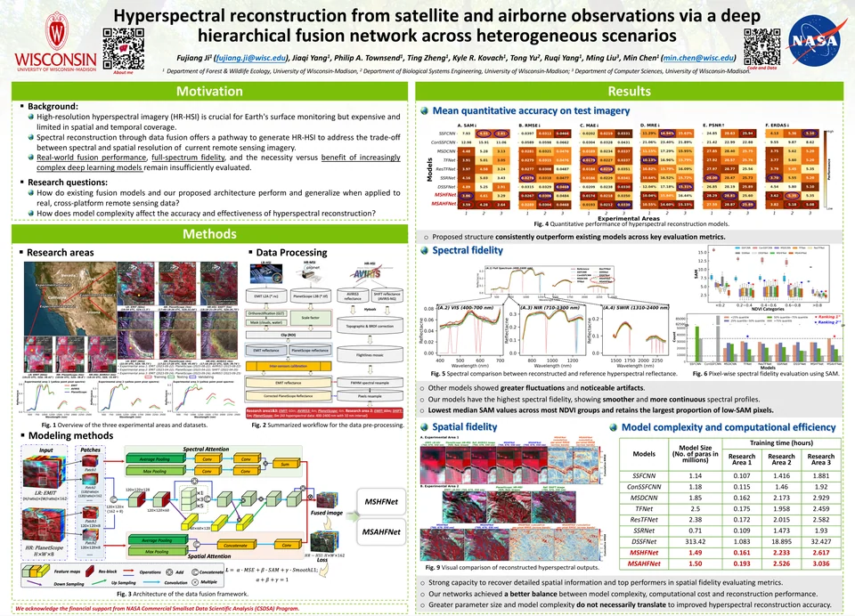
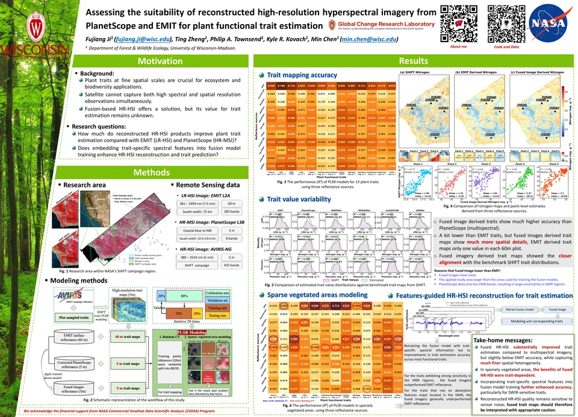
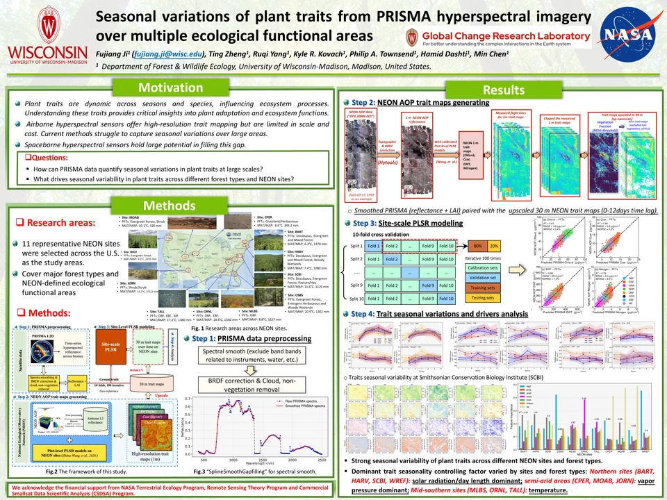
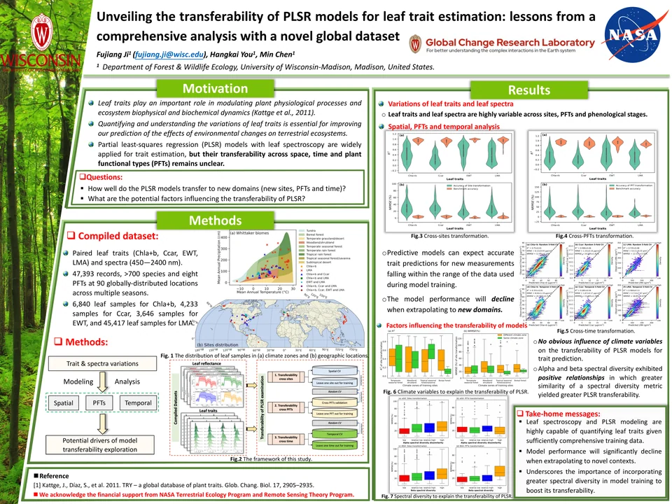
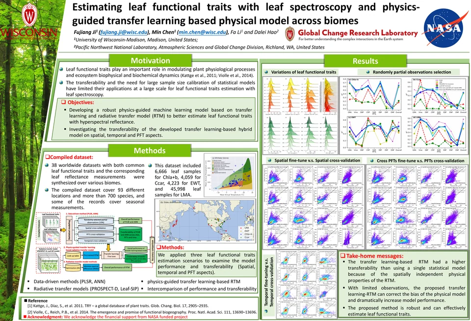

Publications
Research on imaging spectroscopy, ecosystem function, and global change.
Peer-reviewed journal articles
17 articles* Corresponding author · Newest first by final publication date within each authorship group.
Journal metrics checked 8 Oct 2026. JIF years are shown where reported; JCR quartiles refer to the named subject category.
Showing 17 of 17 journal articles
No matching articles. Try another keyword, research topic, or author role.
Under review & in preparation
8 manuscriptsCurrent manuscripts, with study summaries and submission status shown for each.
-
Plant functional trait estimation from PlanetScope–EMIT reconstructed high-resolution hyperspectral imagery reveals spectral-spatial fidelity trade-offs
Manuscript under review. This study evaluates nine deep learning fusion models that reconstruct 5 m high-resolution hyperspectral imagery (HR-HSI) by combining PlanetScope multispectral imagery with NASA EMIT hyperspectral observations at 60 m, and assesses their effectiveness for estimating 13 plant functional traits. Benchmarked against independent AVIRIS-NG trait maps from the NASA SHIFT campaign in California, fused HR-HSI substantially improved trait estimation over the coarse-resolution inputs, while revealing a systematic trade-off between spectral fidelity and spatial detail that governs the operational readiness of fusion products for quantitative trait mapping.
-
Hyperspectral reflectance reveals climate change–driven successional regression in dryland biocrust communities
Manuscript under review. This study estimates the fractional cover of all major biocrust functional types from mixed hyperspectral pixels using spectral unmixing and deep learning, with visible-range pigment absorption bands as the dominant predictors alongside red-edge and shortwave infrared contributions. Model-estimated cover reproduced the successional regression observed in a long-term climate manipulation experiment: under combined warming and altered precipitation, measured late-successional cover declined by 37.3 ± 19.2% and early-successional cover rose by 36.3 ± 10.9%, with model estimates of −20.3 ± 7.9% and +31.5 ± 7.3%. The framework offers a pathway for scaling biocrust monitoring from field plots to landscapes with current and emerging hyperspectral missions.
-
Satellite-observed greenness expansion across Antarctica
Manuscript under review. This study uses long-term satellite observations to document the expansion of vegetation greenness across Antarctica, characterizing where and how rapidly photosynthetic cover is increasing on the continent and linking the observed trends to climate drivers.
-
Leveraging cross-sensor LiDAR observations and Earth embeddings for canopy height prediction
Manuscript under review. This study presents a framework for generating 10 m canopy height maps by fusing Earth embeddings, Sentinel-1/2 composites, topography, and cross-sensor LiDAR observations. Spaceborne LiDAR provides globally consistent but spatially sparse samples, while airborne LiDAR offers fine-resolution measurements over limited areas; a factorial design comparing model classes and input configurations quantifies how each data source contributes to large-area canopy height mapping.
-
From biocrust organic constituents to spaceborne mapping: A transferable hyperspectral framework for drylands
Manuscript under review. This study develops a constituent-based framework for mapping biological soil crusts from diagnostic spectral responses of photosynthetic and protective pigments, soil organic matter, and cellulose, rather than from surface brightness or greenness alone. Spectral measurements from eight dryland regions worldwide were analyzed with PLS regression and PLS discriminant analysis, identifying five consistent spectral regions centered near 361, 462, 689, 902, and 2056 nm. These were combined into five constituent-related indices and applied to EnMAP and EMIT hyperspectral imagery.
-
Reflectance spectroscopy enables robust classification of biocrust successional stages under dry and wet conditions
Manuscript under review. Using a full-range (350–2500 nm) reflectance spectroscopy library of over 700 samples spanning both wet and dry status, this study develops a hierarchical classification scheme that separates biocrusts from bare soil and further resolves successional stages—lightly-pigmented cyanobacteria, darkly-pigmented cyanobacteria, nitrogen-fixing lichen, non-nitrogen-fixing lichen, and moss. The work evaluates model skill across the full successional sequence under both moisture states and identifies the wavelength regions of greatest importance, advancing large-scale successional mapping with narrow-bandwidth spaceborne imaging spectroscopy.
-
New opportunities for global monitoring of vulnerable biological soil crust
Manuscript in preparation. Biological soil crusts cover roughly 12% of Earth’s terrestrial surface and act as ecosystem engineers of the world’s drylands, yet they remain effectively invisible to the satellite records and Earth system models used to monitor the land surface. This perspective argues that a new generation of hyperspectral imaging spectrometers can resolve diagnostic signals of pigments, hydration, organic matter, and mineral substrates across the visible-to-shortwave-infrared spectrum. Combined with spectral–spatial fusion, machine learning upscaling, and a coordinated global ground network (CrustNet), these measurements could support estimates of biocrust fractional cover, composition, and condition, and extend biocrust remote sensing from static mapping toward monitoring degradation, recovery, and climate-driven community change.
-
Forest edges impose a global syndrome on canopy function
Manuscript in preparation. Using NASA’s EMIT spaceborne imaging spectrometer, this study analyzes 49 hyperspectral indices representing ten canopy functional groups across 2,371 peak-growing-season scenes worldwide, covering roughly 1.35 billion forest pixels. Distance from a forest edge structures canopy function along a coherent global syndrome: canopies are drier, more stressed, more structurally and chemically defended, and more spectrally heterogeneous near edges, but greener, wetter, more chlorophyll-rich, and more productive toward interiors. Edge influence is depth-ordered—canopy water and spectral heterogeneity recover within hundreds of meters to about a kilometer, while structural, photoprotective, and defensive chemical signals persist for several kilometers.
Conference posters
5 postersOpen a poster to explore the figures, zoom in on the text, or download the original PDF.
-

2025 · Imaging spectroscopy
Hyperspectral reconstruction
AGU Annual Meeting
View poster -

2025 · Plant functional traits
Plant traits from fused imagery
AGU Annual Meeting
View poster -

2024 · Plant functional traits
Seasonal traits with PRISMA
AGU Annual Meeting
View poster -

2024 · Trait modeling
PLSR model transferability
Bryson Scholarship Poster Session
View poster -

2022 · Transfer learning
Physics-guided transfer learning
AGU Fall Meeting
View poster


Talks & conference presentations
12 presentationsInvited seminars and conference contributions, newest first.
-
Understanding the Dynamics of Plant Functional Traits Across Spatial, Temporal, and Biological Scales Using Multi-Source Hyperspectral Remote Sensing Observations
-
Robust hyperspectral reconstruction from satellite and airborne observations via a deep hierarchical fusion network across heterogeneous scenarios
-
Assessing the suitability of reconstructed high-resolution hyperspectral imagery from PlanetScope and EMIT for plant functional trait estimation
-
Hyperspectral reconstruction from spaceborne and airborne observations to map plant functional traits in fine detail
-
Seasonal variations of plant traits from PRISMA hyperspectral imagery over multiple ecological functional areas
-
Seasonal variations of plant traits from PRISMA hyperspectral imagery over multiple ecological functional areas
-
Eyes in the sky: Decoding plant functional traits with imaging spectroscopy
-
Unveiling the transferability of PLSR models for leaf trait estimation: lessons from a comprehensive analysis with a novel global dataset
-
Global Mappings of 21st-century Forest Edge Dynamic
-
Getting Started with Python for Analyzing Large Climate and Satellite Data
-
Estimating Leaf Functional Traits with Leaf Spectroscopy and Physics-guided Transfer Learning Based Physical Model Across Biomes
-
Fast estimation of leaf biochemical properties by inverting a simple leaf spectra model
Showing 4 of 12 presentations